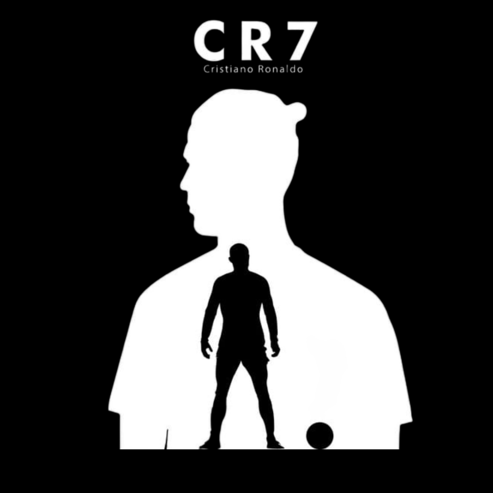

CRISTIANO RONALDO
DOS SANTOS AVEIRO.

Great Footballer.
Your love makes me strong, Your hate make me unstoppable.
-Cristiano Ronaldo.
Cristiano Ronaldo is a well-known football player who is associated with the
sport. He was
born into a socially deprived household and began playing football at an early age. At 18, he was chosen
for the international football squad. Cristiano Ronaldo has become the most famous footballer in the
world in a very short period.
On the other hand, Cristiano has faced a lot in his life to get to this position. Read on to explore the
various aspects of his life.Cristiano Ronaldo was born in Portugal on February 5, 1985, to Jose Dinis
Aveiro, who served as a horticulturist in the township. Ronaldo has a brother and two sisters in
addition to his parents, and he is the oldest of his siblings. Eva Maria Dos Santos was his mother's
name, and she used to cook at other's residences.Ronaldo was born into a low-income family, and thus, he
did not receive schooling. Ronaldo is claimed to have thrown a chair at one of his school instructors
when he was 14 years old, for which he was dismissed from the school. At the same time, Ronaldo has
loved football since he was a youngster and wanted to make a profession out of it, so he dropped out of
school in the middle of his studies. Ronaldo's family backed him up in his choice to drop out of school.
| PERSONAL INFORMATION |
| FULL NAME |
CRISTIANO RONALDO DOS SANTOS AVEIRO |
| DOB |
05th-FEB-1985 |
| BIRTH PLACE |
PORTUGAL |
| HEIGHT |
1.87m(6-ft 2-inch) |
| AGE |
50 |
| STATUS |
MARRIED |
| MOTHER |
MARIA DOLORES DOS SANTOS |
| FATHER |
JOSE DINIS AVEIRO |
| WIFE |
GEORGINA RODRIGUEZ |
| CHILRENS |
4(2-SONs, 2-DAUGHTERs) |
| TEAM |
AI NASSR |
FAMILY
Ronaldo has five living children. He first became a father to a son, who was born on
17 June 2010 in the United States.He has full custody of the child and has not publicly revealed the
identity of the mother per an agreement with her. In January 2015, Ronaldo's five-year
relationship with Russian model Irina Shayk ended.
Ronaldo became a father to twins, born on 8 June 2017 in the United States via surrogacy. He is
currently in a relationship with Argentine-born Spanish model Georgina Rodríguez, who gave birth to a
daughter on 12 November 2017. The couple expected a pair of twins in 2022. The male twin died during
childbirth while the female twin survived.
Ronaldo's father, José, died of an alcoholism-related liver condition at age 52 in September 2005 when
Ronaldo was 20.In January 2023, after Ronaldo moved to Saudi Arabia with his family having been signed by
Saudi Pro League side Al Nassr, the rulers of the Kingdom made Ronaldo an exception to the rule that
unmarried couples are not allowed to live together in Saudi Arabia. An unnamed Saudi lawyer told Spanish
news agency EFE that "the laws of the Kingdom still prohibit cohabitation without a marriage contract", but
Saudi authorities have begun to "turn a blind eye and stop prosecuting anyone, even though these laws are
applied when there is a problem or a crime".
Ronaldo is of (one eighth) Cape Verdean descent through his great-grandmother.He is a Roman Catholic
PROFESSIONAL PROFILE
SPORTING CP
Ronaldo made Sporting CP's first team at age 16. He made his senior debut in August
2002 in a Champions League qualifying match against Inter Milan,and scored his first senior
goals one month later.
MANCHESTER U.
After attracting interest from major clubs, including Arsenal, Manchester United's
Alex Ferguson signed Ronaldo for £12 million on 12 August 2003, an England record for a
teenager. He scored his first United goal in November 2003 and won the FA Cup in his first
season. Ronaldo won the 2005-06 Football League Cup after scoring in United's 4-0 final
win over Wigan Athletic. By 2006-07, he was a key player, helping United win the Premier League
and earning Premier League Player of the Month awards in November and December 2006.
REAL MADRID
In 2009, Ronaldo transferred to Real Madrid for a then world record £80 million.
Despite scoring 33 goals in all competitions and contributing to Real Madrid's 96 points in La Liga,
his first season with Madrid ended trophyless. Following Raúl's departure, Ronaldo was given No.
7 for the 2010-11 season and scored 53 goals, helping Madrid win the Copa del Rey, his first trophy
with Madrid. The 2011-12 season saw Ronaldo score 60 goals across all competitions, leading
Madrid to their first league title in four years and his runner-up finish to Lionel Messi in the
2011 FIFA Ballon d'Or.
AI NASSR
After attracting interest from major clubs, including Arsenal, Manchester United's
Alex Ferguson signed Ronaldo for £12 million on 12 August 2003, an England record for a
teenager. He scored his first United goal in November 2003 and won the FA Cup in his first
season. Ronaldo won the 2005-06 Football League Cup after scoring in United's 4-0 final
win over Wigan Athletic. By 2006-07, he was a key player, helping United win the Premier League
and earning Premier League Player of the Month awards in November and December 2006.
PLAY STYLE
A versatile attacker, Ronaldo is capable of playing on either wing as well as through
the centre of the pitch, and, while ostensibly right-footed, is very strong with both
feet. Tactically, Ronaldo has undergone several evolutions throughout his career. While at
Sporting and during his first season at Manchester United, he was typically deployed as a
traditional winger on the right side of midfield, where he regularly looked to deliver crosses into
the penalty area. In this position, he was able to use his pace and acceleration, agility and
technical skills to take on opponents in one-on-one situations. Ronaldo became noted for his
dribbling and flair, often displaying an array of tricks and feints, such as the step
overs and so-called 'chops' that became his trademark; he has also been known to use the
flip-flap.
I. CAREER
In 2016, Ronaldo led Portugal to their only major title at the UEFA European
Championship, although he was subbed off in the 25th minute in the final. He received the
Silver Boot as the second-highest goalscorer, which gave him his fourth Ballon d'Or later that year.
In the 2018 World Cup, Ronaldo became the oldest player to score a hat-trick in a World Cup match,
in a 3-3 draw against Spain.
HONORS
SPORTING CP
- SUPERTAKA CANDIDO DE OLIVEIRO:2002
MANCHESTER U.
- PREMIER LEAGUE:2006-07-08-09
- FA CUP:2003-04
- FOOTBALL LEAGUE CUP:2005-06, 2008-09
- FA COMMUNITY SHIELD:2007
REAL MADRIR
- LA LIGA:2011-12
- COPA DEL REY:2010-11, 2013-14
- FIFA CLUB WORLD CUP:2014, 2016, 2017
- FA COMMUNITY SHIELD:2007
Believe in yourself. You are braver than you think, more talanted than you know and capable of
more than you imagine. Self believe an hard work always earn you success.
-Cristiano Ronaldo.